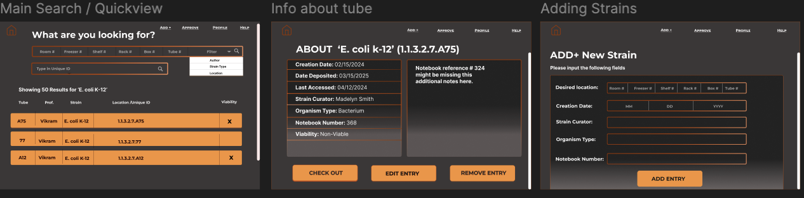
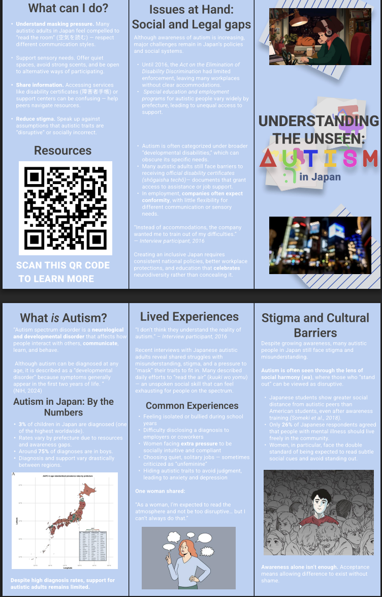

UI/UX Case Studies
These projects combine research, communication goals, and interface design rather than functioning as isolated one-screen concepts.
Oxy Biochemistry Database UI
A clean interface concept for the Occidental College Biochemistry Department, designed to help student researchers search and interpret lab data more efficiently.
- Hierarchy: table-first layout aligned with research workflows.
- Visual system: generous spacing, cool-blue accents, and consistent alignment for readability.
- Feedback: hover and active states to preserve orientation in dense views.
- Scalability: modular components for feature growth.

Autism in Japan Awareness Pamphlet
A research-driven communication artifact developed during my study abroad field placement in Tokyo. The focus was on presenting stigma, masking pressure, and policy gaps in an accessible, respectful way.
- Tone: soft purple/blue palette balancing care with seriousness.
- Layout: column structure designed to support bilingual information flow.
- Hierarchy: key statistics and takeaways foregrounded before deep context.
- Accessibility: clear headings, contrast, and icon consistency.
